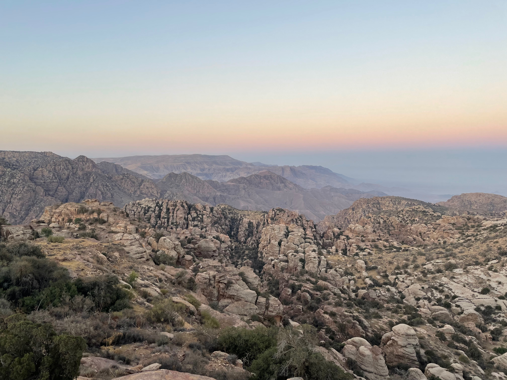

Mohamed Shedeed
PhD Candidate
Political Science
Comparative Politics/ Research Methodology
The Ohio State University
About me
Hello! My name is Mohamed and I'm a Political Science PhD candidate at The Ohio State University and Research Fellow with the Mershon Center for International Security. I'm also currently a Fulbright-Hays Doctoral Dissertation Research Abroad (DDRA) Fellow with the US Department of Education conducting my dissertation research in Jordan. I am proudly from Jersey City, NJ (home to the Statue of Liberty btw) but am currently based between Amman, Jordan and Columbus, Ohio for graduate school. As an undergraduate, I attended Seton Hall University, where I received my degree in International Relations and Economics and worked as a research assistant for the Center for Peace and Conflict Studies.
My dissertation research asks several questions about how power is created, maintained, and used in Jordan, particularly within the context of water distribution in Jordan. My main research project asks how decentralization reforms in the irrigation water sector impacted access to irrigation water in the Jordan Valley. I bring previous social science literature on the impact of decentralization in conversation with work on other factors influencing public goods provision - particularly work on ethnicity and identity. In doing so, I ask how decentralization and local social networks interact with one another to facilitate or hinder patronage and corruption. Methodologically, my work brings in modern approaches such as machine learning and remote sensing to collect data that is otherwise difficult to access. These methods are especially useful in constructing two key empirical elements of my dissertation - agricultural and demographic measurements.
You can click here an interactive view of some of my research on tribal dynamics in Jordan.
Teaching
POLISC 4940: Politics of Immigration
Instructor of Record
This course provides students with an overview of the literature on voluntary and involuntary migration throughout the world. Students are exposed to a variety of topics, including public attitudes toward migration, migrant experiences in host countries, and reasons for migration. The course is broken into two main parts. Part I discusses migration in the “Global North” and addresses concepts related to these migration patterns. Part II includes readings on migration in the “Global South.” In both parts, the goal is to help students develop an understanding of migration patterns, how host communities react to incoming refugees and migrants, and how the origins of migrants can affect these experiences. You can find the syllabus for this course here.
POLISC 7552: Generalized Linear Models
Teaching Assistant
for Skyler Cranmer
This course is the second in a sequence of three courses designed for the methods sequence of the Political Science PhD program at Ohio State. It covers the theoretical and applied aspects of linear regression and maximum likelihood estimation, with an emphasis on learning how to interpret and evaluate these models for both inferential and predictive purposes
My responsibilities in this course included designing weekly recitation sessions and assisting students with their weekly problem sets and understanding of the material, aside from general TA duties such as grading.
The R code used for recitation sessions can be found in the R Tutorials section.
POLISC 7551: Introduction to Probability Theory
Teaching Assistant
for Jan Pierskalla
This course was the first in a sequence of three courses designed for the methods sequence of the Political Science PhD program. It covers fundamentals of statistics and probability theory such as probability distributions, hypothesis testing, and basic linear regression.
POLISC 3220: Politics of the Developing World
Teaching Assistant
for Erin Lin
This course focused on studying empirical and theoretical political science literature around social, political, and economic development. Students discussed various approaches to understanding development economics and the role that political actors play in these processes.